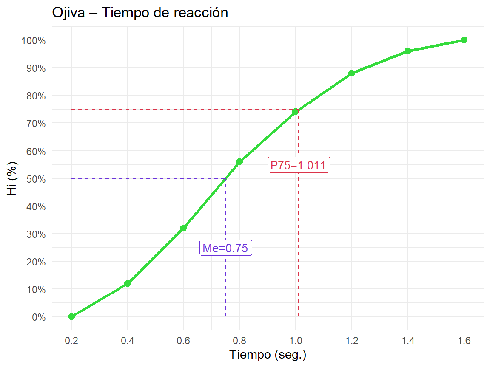
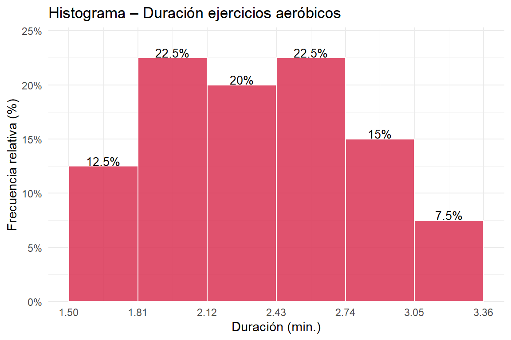

Ver código
options(
knitr.table.format = "html",
scipen = 999
)options(
knitr.table.format = "html",
scipen = 999
)ipak <- function(pkg){
options(repos = c(CRAN="https://cloud.r-project.org"))
new.pkg <- pkg[!(pkg %in% rownames(installed.packages()))]
if(length(new.pkg)) install.packages(new.pkg, dependencies = TRUE)
invisible(lapply(pkg, function(p)
suppressPackageStartupMessages(library(p, character.only = TRUE))
))
}
packages <- c("tidyverse","kableExtra","psych","readxl","palmerpenguins")
ipak(packages)df <- data.frame(
Sexo = c("M","F","M","F","M","F","M","F","M","F",
"M","F","M","F","M","F","M","F","M","F"),
Edad = c(15,16,14,15,17,16,15,14,16,15,
17,16,15,17,16,15,14,16,15,17),
Horas = c(3.5,5.0,6.5,2.5,7.0,4.0,8.0,3.0,5.5,2.0,
9.0,4.5,6.0,5.0,7.5,3.5,6.8,4.2,5.8,2.8),
Nivel = c("Bajo","Medio","Alto","Bajo","Alto","Medio","Alto","Bajo","Medio","Bajo",
"Alto","Medio","Alto","Medio","Alto","Bajo","Alto","Medio","Medio","Bajo")
)| Variable | Tipo | Escala |
|---|---|---|
| Sexo | Cualitativa | Nominal |
| Edad | Cuantitativa discreta | De razón |
| Horas de entrenamiento | Cuantitativa continua | De razón |
| Nivel de condición física | Cualitativa | Ordinal |
grupos <- split(df$Horas, df$Sexo)
res <- sapply(grupos, function(x) c(Media=mean(x), SD=sd(x), CV=sd(x)/mean(x)*100))
knitr::kable(t(round(res,3)), caption="Dispersión de horas por sexo")| Media | SD | CV | |
|---|---|---|---|
| F | 3.65 | 1.054 | 28.886 |
| M | 6.56 | 1.511 | 23.031 |
El grupo con menor CV es el más homogéneo: Hombres (CV = 23.03%).
N <- 200; A <- 5
ni <- c(10, 8, 40, 84, 40, 8, 10)
Y3 <- 900/40
marcas <- Y3 + (1:7 - 3)*A
Li <- marcas - A/2
Ls <- marcas + A/2
hi <- ni/N
Hi <- cumsum(hi)
Ni <- cumsum(ni)
knitr::kable(data.frame(
Intervalo = paste0("[", Li, " – ", Ls, ")"),
Yi = marcas, ni, Ni,
hi = round(hi,4), Hi = round(Hi,4)
), col.names = c("Intervalo","Yᵢ","nᵢ","Nᵢ","hᵢ","Hᵢ"),
caption = "Tabla completa – Rendimiento físico (N=200)")| Intervalo | Yᵢ | nᵢ | Nᵢ | hᵢ | Hᵢ |
|---|---|---|---|---|---|
| [10 – 15) | 12.5 | 10 | 10 | 0.05 | 0.05 |
| [15 – 20) | 17.5 | 8 | 18 | 0.04 | 0.09 |
| [20 – 25) | 22.5 | 40 | 58 | 0.20 | 0.29 |
| [25 – 30) | 27.5 | 84 | 142 | 0.42 | 0.71 |
| [30 – 35) | 32.5 | 40 | 182 | 0.20 | 0.91 |
| [35 – 40) | 37.5 | 8 | 190 | 0.04 | 0.95 |
| [40 – 45) | 42.5 | 10 | 200 | 0.05 | 1.00 |
lim <- seq(0.20, 1.60, by=0.20)
ni3 <- c(6,10,12,9,7,4,2)
N3 <- 50
Hi3 <- cumsum(ni3/N3)
hi3 <- ni3/N3
knitr::kable(data.frame(
Intervalo = paste0("[",lim[-8]," – ",lim[-1],")"),
ni=ni3, Ni=cumsum(ni3),
"hi%"=round(hi3*100,1), "Hi%"=round(Hi3*100,1)
), caption="Distribución de tiempos de reacción")| Intervalo | ni | Ni | hi. | Hi. |
|---|---|---|---|---|
| [0.2 – 0.4) | 6 | 6 | 12 | 12 |
| [0.4 – 0.6) | 10 | 16 | 20 | 32 |
| [0.6 – 0.8) | 12 | 28 | 24 | 56 |
| [0.8 – 1) | 9 | 37 | 18 | 74 |
| [1 – 1.2) | 7 | 44 | 14 | 88 |
| [1.2 – 1.4) | 4 | 48 | 8 | 96 |
| [1.4 – 1.6) | 2 | 50 | 4 | 100 |
Frecuencia acumulada hasta [0.60–0.80): H_3 = 56% → 56% de los estudiantes.
P84 <- 1.00 + 0.20*(0.84 - Hi3[4])/hi3[5]P_{84} = 1{,}00 + 0{,}20 \cdot \frac{0{,}84 - 0{,}74}{0{,}14} = 1.1429\ \text{seg}
El 84% de los estudiantes reaccionó en menos de 1.143 segundos.
Me3 <- 0.60 + 0.20*(0.50 - Hi3[2])/hi3[3]
P75_3 <- 0.80 + 0.20*(0.75 - Hi3[3])/hi3[4]
ojiva <- data.frame(x=lim, y=c(0,Hi3)*100)
ggplot(ojiva, aes(x,y)) +
geom_line(color="#34db3c", linewidth=1.1) +
geom_point(size=2.5, color="#34db3c") +
geom_segment(aes(x=Me3, xend=Me3, y=0, yend=50), linetype=2, color="#6c34db") +
geom_segment(aes(x=0.20, xend=Me3, y=50,yend=50), linetype=2, color="#6c34db") +
geom_segment(aes(x=P75_3, xend=P75_3, y=0, yend=75), linetype=2, color="#db344a") +
geom_segment(aes(x=0.20, xend=P75_3, y=75,yend=75), linetype=2, color="#db344a") +
annotate("label",x=Me3, y=25,label=paste0("Me=",round(Me3,3)), color="#6c34db",size=3.5) +
annotate("label",x=P75_3,y=55,label=paste0("P75=",round(P75_3,3)),color="#db344a",size=3.5) +
scale_y_continuous(labels=function(x)paste0(x,"%"), breaks=seq(0,100,10)) +
scale_x_continuous(breaks=lim) +
labs(title="Ojiva – Tiempo de reacción", x="Tiempo (seg.)", y="Hi (%)") +
theme_minimal()
lim4 <- seq(10,50,5)
marc4 <- (lim4[-9]+lim4[-1])/2
nA <- c(5,8,12,16,20,18,11,6); NA4 <- sum(nA)
nB <- c(4,6,10,15,22,25,20,12); NB4 <- sum(nB)
hiA <- nA/NA4; HiA <- cumsum(hiA)
hiB <- nB/NB4; HiB <- cumsum(hiB)
mediana_g <- function(lims, Hi, hi) {
i <- which(Hi>=0.5)[1]
lims[i] + 5*(0.5-Hi[i-1])/hi[i]
}
moda_g <- function(lims, ni) {
i <- which.max(ni)
d1 <- ni[i]-ifelse(i>1,ni[i-1],0)
d2 <- ni[i]-ifelse(i<length(ni),ni[i+1],0)
lims[i] + 5*d1/(d1+d2)
}
medA <- sum(marc4*nA)/NA4; MeA <- mediana_g(lim4,HiA,hiA); MoA <- moda_g(lim4,nA)
medB <- sum(marc4*nB)/NB4; MeB <- mediana_g(lim4,HiB,hiB); MoB <- moda_g(lim4,nB)
sdA <- sqrt(sum(nA*(marc4-medA)^2)/NA4)
sdB <- sqrt(sum(nB*(marc4-medB)^2)/NB4)
knitr::kable(data.frame(
Medida = c("Media","Mediana","Moda","Desv. Estándar","CV (%)"),
`Grupo A` = round(c(medA,MeA,MoA,sdA,sdA/medA*100),3),
`Grupo B` = round(c(medB,MeB,MoB,sdB,sdB/medB*100),3)
), caption="Tendencia central y homogeneidad por grupo")| Medida | Grupo.A | Grupo.B |
|---|---|---|
| Media | 31.146 | 33.904 |
| Mediana | 31.750 | 35.000 |
| Moda | 33.333 | 36.875 |
| Desv. Estándar | 9.199 | 9.093 |
| CV (%) | 29.536 | 26.820 |
El grupo más homogéneo es Grupo B (menor CV).
dias <- c(2,3,5,1,6,7,4,5,3,6,5,2,7,3,4,5,3,2,4,1)
depor <- c(1,1,2,1,3,4,2,2,1,3,3,1,4,1,2,2,1,1,2,1)tabla_frec <- function(x, nombre) {
t <- as.data.frame(table(x))
t$Porc <- round(t$Freq/length(x)*100,1)
t$Acum <- cumsum(t$Freq)
names(t) <- c(nombre,"nᵢ","hᵢ (%)","Nᵢ")
t
}
knitr::kable(tabla_frec(dias,"Días/semana"), caption="Días de actividad física")| Días/semana | nᵢ | hᵢ (%) | Nᵢ |
|---|---|---|---|
| 1 | 2 | 10 | 2 |
| 2 | 3 | 15 | 5 |
| 3 | 4 | 20 | 9 |
| 4 | 3 | 15 | 12 |
| 5 | 4 | 20 | 16 |
| 6 | 2 | 10 | 18 |
| 7 | 2 | 10 | 20 |
knitr::kable(tabla_frec(depor,"N° deportes"), caption="Deportes practicados")| N° deportes | nᵢ | hᵢ (%) | Nᵢ |
|---|---|---|---|
| 1 | 9 | 45 | 9 |
| 2 | 6 | 30 | 15 |
| 3 | 3 | 15 | 18 |
| 4 | 2 | 10 | 20 |
P55d <- quantile(sort(depor), 0.55, type=2)
P45a <- quantile(sort(dias), 0.45, type=2)x6 <- 0:6
n6 <- c(92,118,96,54,28,10,2)
N6 <- 400
media6 <- sum(x6*n6)/N6
acum6 <- cumsum(n6)
Me6 <- x6[which(acum6 >= N6/2)[1]]
Mo6 <- x6[which.max(n6)]
pos37 <- ceiling(N6*0.37)
P37_6 <- x6[which(acum6 >= pos37)[1]]
knitr::kable(data.frame(
Medida = c("Media","Mediana","Moda","P₃₇"),
Valor = c(round(media6,4), Me6, Mo6, P37_6),
Interpretacion = c(
paste0("Promedio de ",round(media6,4)," lesiones por sesión"),
paste0("El 50% de sesiones tuvo ≤ ",Me6," lesión"),
paste0("La cantidad más frecuente: ",Mo6," lesión (",n6[Mo6+1]," sesiones)"),
paste0("El 37% de sesiones tuvo ≤ ",P37_6," lesión")
)
), caption="Medidas – Lesiones deportivas")| Medida | Valor | Interpretacion |
|---|---|---|
| Media | 1.615 | Promedio de 1.615 lesiones por sesión |
| Mediana | 1.000 | El 50% de sesiones tuvo ≤ 1 lesión |
| Moda | 1.000 | La cantidad más frecuente: 1 lesión (118 sesiones) |
| P₃₇ | 1.000 | El 37% de sesiones tuvo ≤ 1 lesión |
La media (1.615) > mediana (1) porque la distribución tiene sesgo positivo: hay pocas sesiones con muchas lesiones que elevan la media.
x7 <- c(2.1,1.8,2.5,3.0,1.9,2.4,2.7,1.5,2.2,2.0,
3.1,2.8,1.7,2.5,2.3,2.6,1.9,2.0,2.2,3.3,
2.4,2.1,1.8,2.7,2.5,2.9,3.0,2.6,1.6,2.3,
2.8,2.2,2.0,1.9,2.4,2.5,2.1,2.7,3.2,2.8)A7 <- round((max(x7)-min(x7))/6, 2) + 0.01
breaks7 <- seq(min(x7), min(x7)+6*A7, by=A7)
h7 <- hist(x7, breaks=breaks7, plot=FALSE)
Li7 <- h7$breaks[-7]; Ls7 <- h7$breaks[-1]
ni7 <- h7$counts; N7 <- length(x7)
Ni7 <- cumsum(ni7); hi7 <- ni7/N7; Hi7 <- cumsum(hi7)
knitr::kable(data.frame(
Intervalo = paste0("[",round(Li7,2)," – ",round(Ls7,2),")"),
ni=ni7, Ni=Ni7,
"hi%"=round(hi7*100,2), "Hi%"=round(Hi7*100,2)
), caption="Distribución – Duración sesiones aeróbicas")| Intervalo | ni | Ni | hi. | Hi. |
|---|---|---|---|---|
| [1.5 – 1.81) | 5 | 5 | 12.5 | 12.5 |
| [1.81 – 2.12) | 9 | 14 | 22.5 | 35.0 |
| [2.12 – 2.43) | 8 | 22 | 20.0 | 55.0 |
| [2.43 – 2.74) | 9 | 31 | 22.5 | 77.5 |
| [2.74 – 3.05) | 6 | 37 | 15.0 | 92.5 |
| [3.05 – 3.36) | 3 | 40 | 7.5 | 100.0 |
df7 <- data.frame(Li=Li7, Ls=Ls7, hi=hi7*100, Marca=(Li7+Ls7)/2)
ggplot(df7, aes(x=Li, y=hi)) +
geom_rect(aes(xmin=Li,xmax=Ls,ymin=0,ymax=hi),
fill="#db3455", color="white", alpha=0.85) +
geom_text(aes(x=Marca, y=hi+0.5, label=paste0(hi,"%")), size=3.5) +
scale_x_continuous(breaks=round(breaks7,2)) +
scale_y_continuous(labels=function(x)paste0(x,"%"),
expand=expansion(mult=c(0,0.1))) +
labs(title="Histograma – Duración ejercicios aeróbicos",
x="Duración (min.)", y="Frecuencia relativa (%)") +
theme_minimal()
med7 <- mean(x7); s7 <- sd(x7)
dentro <- sum(x7 >= med7-s7 & x7 <= med7+s7)\bar{x} = 2.375 | s = 0.454 | Rango: [1.921, 2.829]
65% de las sesiones (26 de 40) están comprendidas entre \bar{x} - s y \bar{x} + s.